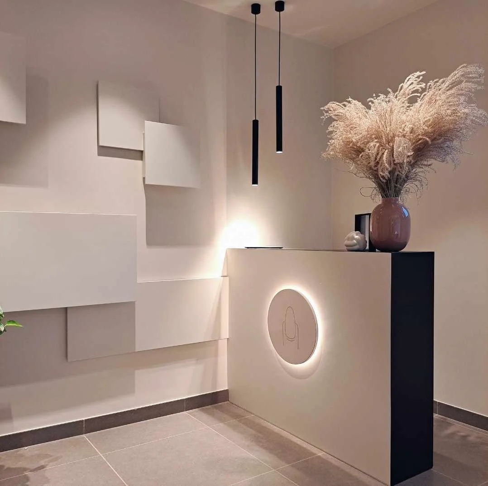

Nagelstudio · Kalken
Mariecure
Verzorgde nagels
in een gezellige sfeer.
Geniet van een moment voor jezelf in een rustig salon waar comfort en kwaliteit centraal staan.

Welkom
Welkom bij Mariecure! In mijn nagelstudio ben je welkom voor een persoonlijke verzorging, mooie nagels en een moment van ontspanning. Ik werk uitsluitend met kwaliteitsproducten en hecht veel belang aan hygiëne en precisie. Door mij voortdurend bij te scholen en nieuwe opleidingen te volgen, blijf ik op de hoogte van de nieuwste technieken. Kom gerust langs voor een professionele nagel- of voetverzorging. Hopelijk tot snel!
Behandelingen
Vijf behandelingen, op maat van jouw nagels.
Reviews
★★★★★
Wauw, gewoon wauw! Mijn nagels zijn ALTIJD on point dankzij jou! Van de vorm tot de kleur, alles is tot in de puntjes verzorgd. Je luistert echt naar wat ik wil, maar verrast me elke keer opnieuw met jouw creativiteit. En dan nog niet gesproken over hoe fijn het is om bij jou langs te komen met de vele gezellige babbeltjes en pure me-time! ✨💅
★★★★★
Altijd heel tevreden over het resultaat & Marieke is heel aangenaam om een babbeltje mee te slaan 😙
★★★★★
Ik heb mijn nagels laten doen bij Mariecure 💅 en ik ben enorm tevreden! Ze werkt super netjes en het resultaat is prachtig ✨ Mijn nagels zien er top uit! Echt een aanrader als je jezelf even wil verwennen.
★★★★★
Ik kijk altijd uit naar mijn moment ontspanning bij Marieke in een gezellig salon, tijdens een leuke babbel, met leuke ideeën voor mijn nagels!
★★★★★
Bij Mariecure ben je in goede handen! Een verzorgd en sfeervol salon, toffe madam, hanteert betaalbare tarieven, staat open voor mijn soms wat zotte ideetjes en het eindresultaat is altijd prachtig én mijn nagels blijven perfect in orde tot mijn volgende afspraak. Niet twijfelen, gewoon je afspraak boeken!